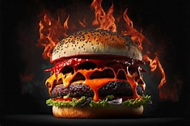

Receitas
🍔 Hambúrguer Clássico com Queijo Cheddar
Tabela Nutricional
| Componente | Quantidade |
|---|---|
| Porção | 1 unidade (220g) |
| Calorias | 580 |
| Proteínas | 30g |
| Carboidratos | 40g |
| Gorduras Totais | 32g |
| Gorduras Saturadas | 13g |
| Gordura Trans | 0.5g |
| Sódio | 920mg |
| Fibras | 4g |
Ingredientes:
- 150g de carne moída
- Sal e pimenta a gosto
- 1 fatia de queijo cheddar
- 1 pão de hambúrguer com gergelim
- 1 folha de alface
- 1 rodela de tomate
- 1 colher de sopa de maionese
Modo de preparo:
Modele a carne, grelhe, adicione o queijo e monte com os demais ingredientes.
🍔 Hambúrguer Mexicano Picante
Tabela Nutricional
| Componente | Quantidade |
|---|---|
| Porção | 1 unidade (220g) |
| Calorias | 580 |
| Proteínas | 30g |
| Carboidratos | 40g |
| Gorduras Totais | 32g |
| Gorduras Saturadas | 13g |
| Gordura Trans | 0.5g |
| Sódio | 920mg |
| Fibras | 4g |
Ingredientes:
- 150g de carne moída
- Cominho, páprica picante, sal e pimenta
- Guacamole, sour cream, jalapeños
- Pão de brioche
Modo de preparo:
Misture os temperos na carne, grelhe e monte com os ingredientes mexicanos.
🍔 Hambúrguer BBQ com Bacon Caramelizado

Tabela Nutricional
| Componente | Quantidade |
|---|---|
| Porção | 1 unidade (230g) |
| Calorias | 650 |
| Proteínas | 32g |
| Carboidratos | 45g |
| Gorduras Totais | 36g |
| Gorduras Saturadas | 14g |
| Gordura Trans | 1.2g |
| Sódio | 980mg |
| Fibras | 3g |
Ingredientes:
- 150g de carne moída
- 2 fatias de bacon, açúcar mascavo
- Molho barbecue, queijo prato
- Pão australiano ou brioche, cebola roxa
Modo de preparo:
Grelhe a carne com queijo, caramelize o bacon e monte com os demais ingredientes.
🍔 Hambúrguer Artesanal de Costela
Hamburguer artesanal com aquela carninha de costela que derrete na boca!
Tabela Nutricional
| Componente | Quantidade por porção |
|---|---|
| Calorias | 420 kcal |
| Carboidratos | 1 g |
| Proteínas | 28 g |
| Gorduras Totais | 34 g |
| Gorduras Saturadas | 14 g |
| Gorduras Trans | 0 g |
| Fibras | 0 g |
| Sódio | 320 mg |
Ingredientes:
- 500g de carne de costela moída
- Sal e pimenta-do-reino a gosto
- 1 colher (chá) de páprica defumada
- 1 colher (sopa) de molho inglês
- Pão brioche
- Queijo cheddar
- Cebola caramelizada
- Rúcula
- Maionese artesanal
Modo de Preparo:
- Misture a carne com sal, pimenta, páprica e molho inglês.
- Modele os hambúrgueres e leve à geladeira por 30 minutos.
- Grelhe em chapa quente até o ponto desejado.
- Monte com pão brioche, queijo derretido, cebola caramelizada, rúcula e maionese.
🍔 Hambúrguer Vegetariano de Grão-de-Bico
Vegetarianos também são super bem-vindos para aproveitar um dos nossos lanches! Hambúrguer feito de Grão-de-Bico.
Tabela Nutricional
| Componente | Quantidade por porção |
|---|---|
| Calorias | 270 kcal |
| Carboidratos | 30 g |
| Proteínas | 12 g |
| Gorduras Totais | 10 g |
| Gorduras Saturadas | 1 g |
| Gorduras Trans | 0 g |
| Fibras | 8 g |
| Sódio | 350 mg |
Ingredientes:
- 1 xícara de grão-de-bico cozido
- 1/2 cebola picada
- 1 dente de alho
- 1 colher (sopa) de farinha de aveia
- 1 colher (chá) de cominho
- Sal e pimenta a gosto
- Azeite para grelhar
- Pão integral
- Alface, tomate, pepino
- Molho de iogurte com hortelã
Modo de Preparo:
- Processe o grão-de-bico com cebola, alho, cominho, sal e pimenta.
- Adicione a farinha de aveia até dar liga.
- Modele os hambúrgueres e leve à geladeira por 20 minutos.
- Grelhe com azeite até dourar.
- Monte com pão integral, vegetais e molho de iogurte.
🍔 Receita do Hambúrguer de Siri do Bob Esponja
Inspirado pelo delicioso hambúrguer de siri feito pelo melhor mestre-cuca do oceano!
Tabela Nutricional
| Componente | Quantidade por porção |
|---|---|
| Calorias | 208,73 kcal |
| Carboidratos | 10,44 g |
| Proteínas | 19,06 g |
| Gorduras Totais | 10,18 g |
| Gorduras Saturadas | 1,98 g |
| Gorduras Trans | 0,00 g |
| Fibras | 2,72 g |
| Sódio | 240,45 mg |
Ingredientes (5 porções)
Para o hambúrguer:
- 500g de carne de siri descongelada
- 1 colher (sopa) de farinha de trigo
- 1 colher (sopa) de margarina ou manteiga
- 1 cebola picada
- 1 colher (sopa) de colorau
- 2 dentes de alho picados
- Suco de 1 limão pequeno
- Sal e pimenta-do-reino a gosto
- Azeite para fritar
Para a montagem:
- Pão de hambúrguer com gergelim
- Alface crespa
- Queijo prato
- Cebola roxa em rodelas
- Tomate em rodelas
- Picles
- Ketchup
- Mostarda
Modo de Preparo
- Em fogo médio, derreta a margarina e refogue a cebola até ficar transparente.
- Adicione a farinha de trigo e misture bem.
- Acrescente a carne de siri e continue mexendo até formar uma massa homogênea.
- Adicione o suco de limão, alho, sal, pimenta e colorau. Cozinhe por cerca de 10 minutos.
- Deixe esfriar um pouco e modele os hambúrgueres com as mãos.
- Frite os hambúrgueres no azeite até ficarem dourados.
Montagem (ordem oficial do Bob Esponja)
- Pão
- Hambúrguer de siri
- Alface
- Queijo
- Cebola
- Tomate
- Ketchup
- Mostarda
- Picles
- Pão